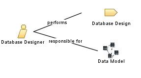

| Role: Database Designer |
 |
|
Relationships
 |
||
| Modifies |
|
|
|---|---|---|
| Process Usage | ||
Main Description
|
For most application development projects, the technology used for persisting data is a relational database. The database designer is responsible for defining the detailed database design, including tables, indexes, views, constraints, triggers, stored procedures, and other database-specific constructs needed to store, retrieve, and delete persistent objects. This information is maintained in the Artifact: Data Model. The scope of the tasks performed by the database designer role vary depending on the size and complexity of the application development effort and the type of persistent data storage mechanisms used for the project. |
Staffing
More Information
© Copyright IBM Corp. 1987, 2006. All Rights Reserved. |